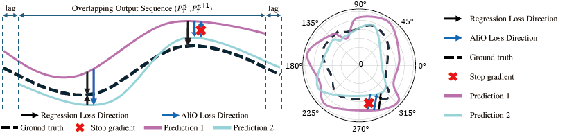
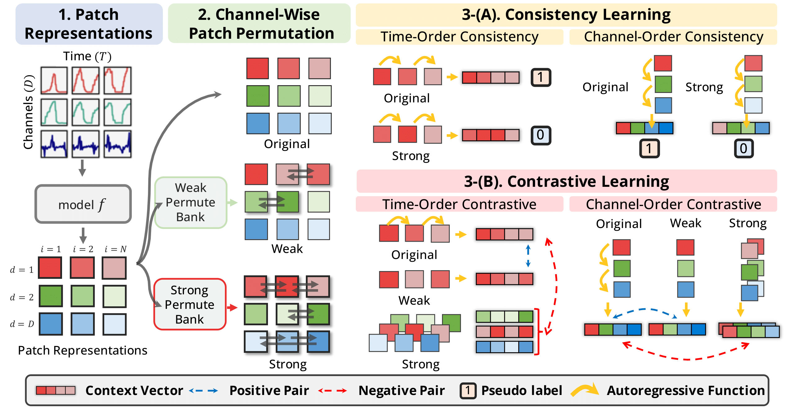
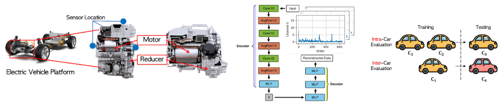
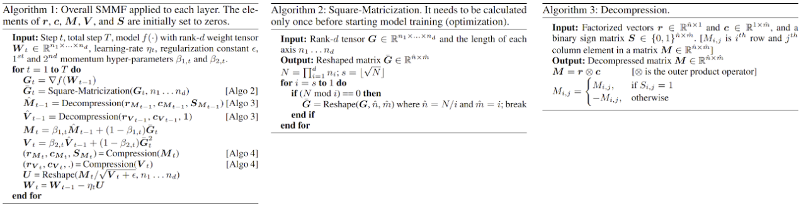

Summary
Highly accomplished AI/ML Engineer with a proven track record in developing robust and memory-efficient solutions for Time Series Analysis and Embedded AI systems. My research focuses on enhancing the reliability and performance of Deep Learning models, evidenced by four publications accepted at top-tier conferences (NeurIPS, ICLR, CIKM, AAAI) during my Ph.D. program. Expertise includes Time Series Forecasting, Self-Supervised Learning, Model Optimization, and practical C/C++ deployment on resource-constrained hardware.
Publications
-
AliO: Output Alignment Matters in Long-Term Time Series Forecasing
NeurIPS 2025 (Poster)
-
AliO YouTube (Generated by NotebookLM): Link
- AliO NeurIPS Poster: Link
- Problem Identification: Solved the critical Output Alignment Problem in Long-Term Time Series Forecasting (LTSF), where predictions lack consistency across lagged inputs.
- Methodology: Developed AliO (Align Outputs), a novel loss function that ensures prediction consistency in both time and frequency domains.
- Key Metric: Proposed the Time Alignment Metric (TAM) to quantitatively measure prediction consistency and data-model robustness, a factor previously unaddressed by MSE.
- Performance Highlights: Achieved substantial performance gains across LTSF models:
- MSE Improvement: Up to 27.5%
- \text{TAM} Improvement: Up to 58.2%

-
PPT: Patch Order Do Matters In Time Series Pretext Task
ICLR 2025 (Poster)
- Problem Identification: Identified that existing patch-based models often fail to capture essential time- and channel-wise patch order dependencies in time series data.
- Methodology: Introduced PPT (Patch order-aware Pretext Task), a novel self-supervised learning task that exploits intrinsic sequential order information through channel-wise patch permutations.
- Key Components: Proposed two core learning methods: Patch Order Consistency Learning (quantifies correctness) and Contrastive Learning (distinguishes permutation strength).
- Key Metric: Proposed ACF-COS (Autocorrelation Function with Cosine Similarity), a metric to quantify the "orderness" of a time series dataset.
- Performance Highlights: Enhanced model performance over mask-based learning by:
- Supervised Task: Improving up to 7% accuracy for cardiogram tasks.
- Self-Supervised Task: Outperforming mask-based learning by 5% in human activity recognition.

-
Smart ECU: Scalable On-Vehicle Deployment of Drivetrain Fault Classification Systems for Commercial Electric Vehicles
CIKM 2025 (Oral)
- Goal: Presented Smart ECU, the first on-vehicle drivetrain fault classification solution for motor-reducers on commercial EVs, designed for scalable mass production.
- Data: Collected authentic fault and normal vibration data from seven different EV models (e.g., Hyundai IONIQ 5, KIA EV6) and over 19 drivetrains under diverse real-world driving conditions.
- Deployment Challenge: Addressed the challenge of deploying on extremely resource-constrained ECU environments, facilitating Progonstic and Health Management (PHM) solutions on commercial EVs.
- Efficiency & Results: Achieved strong efficiency and performance:
- Model Size: Required only 3.28 MB of memory, a 99.24% reduction compared to prior cloud-based methods.
- Generalizability: Demonstrated strong generalization performance in both intra-car (same vehicle type) and inter-car (different vehicle types) evaluations.

-
SMMF: Square-Matricized Momentum Factorization for Memory-Efficient Optimization
AAAI 2025 (Poster)
-
SMMF YouTube: Link
- Problem Solved: Addressed the high memory consumption of widely-used adaptive optimizers (e.g., Adam) in training large-scale Deep Learning models.
- Methodology: Proposed SMMF (Square-Matricized Momentum Factorization), a novel method utilizing a square-matricization and one-time single matrix factorization scheme.
- Key Advantage: Enables flexible and efficient factorization of momentum tensors regardless of their arbitrary rank (shape), making it applicable to all layers (Linear, CNN, Transformer).
- Theoretical Foundation: Provided a regret bound analysis to theoretically confirm that SMMF converges comparably to non-memory-efficient adaptive optimizers.
- Performance Highlights: Achieved state-of-the-art memory efficiency:
- Memory Reduction: Reduced the memory requirement by up to 96% compared to standard adaptive optimizers.
- Competitive Performance: Maintained competitive optimization capability across various benchmarks (e.g., ResNet50 on ImageNet).

Professional Activities
-
(November 25, 2025) - [Project] Conference Deadline Tracker, Local web server project , [Project Completed]
-
(November 20, 2025) - Poster Session Presenter, JKAIA 2025 (Joint Korean Artificial Intelligence Association)
-
(November 11, 2025) - Session Chair, CIKM 2025 (ACM International Conference on Information and Knowledge Management)
-
(November 10-14, 2025) - Paper Presenter (Oral), CIKM 2025 (Smart ECU)
-
(October 2025) - Completed Research Collaboration, Hyundai Motor Company
-
(April 24-28, 2025) - Poster Presenter, ICLR 2025 (International Conference on Learning Representations)
-
(February 25 - March 4, 2025) - Poster Presenter, AAAI 2025 (The 39th Annual AAAI Conference on Artificial Intelligence)
Technical Skills & Expertise
Core ML/DL & Data Science
- PyTorch (Expert)
- TensorFlow
- Python (Pandas, NumPy, Scikit-learn)
Embedded Systems & Deployment
- C/C++
- ARM (STM32, Microcontrollers)
- Linux, Docker (Deployment)
- Octave, Arduino, Expressif
Tools & Development
- Visual Studio, Android Studio
- GitHub (Primary Version Control)
- HTML, CSS, Flutter (Web/Mobile)
Research Interests
Time Series Forecasting
Anomaly Detection
Prognostics and Health Management (PHM)
Self-Supervised Learning (SSL)
Memory-Efficient Optimization
Embedded / Edge AI
Large Language Models (LLM)
Multimodal AI
Education
Ulsan National Institute of Science and Technology (UNIST)
AI Graduate School (Embedded AI Lab by Seulki Lee)
Ph.D. Candidate (Integrated M.S. & Ph.D. Program, 7th Semester) (2022 - Present)
Sangmyung University
B.S. in Electronic Engineering (Embedded Systems Track)
Graduated as Valedictorian (Early Graduation) (~2022)